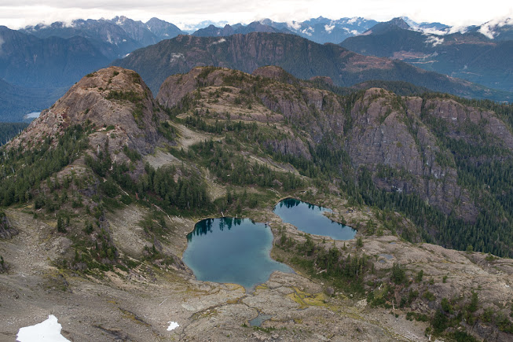
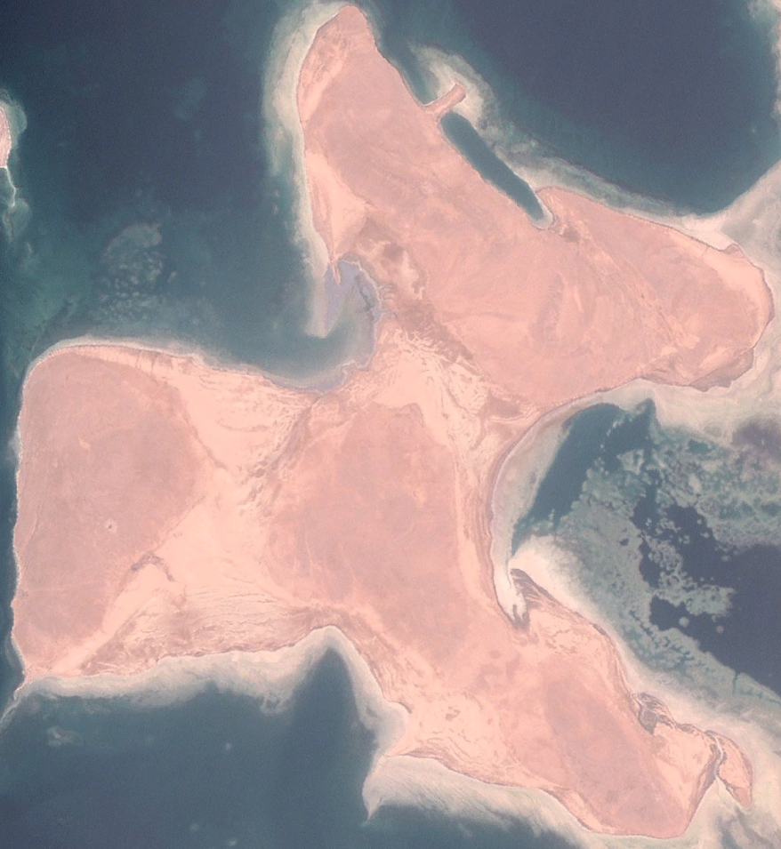
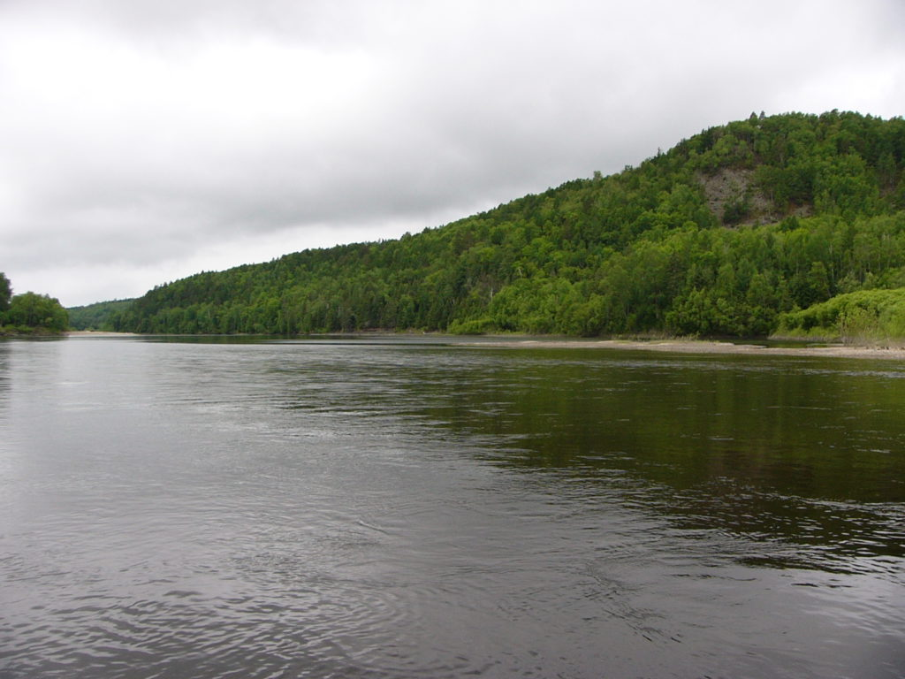
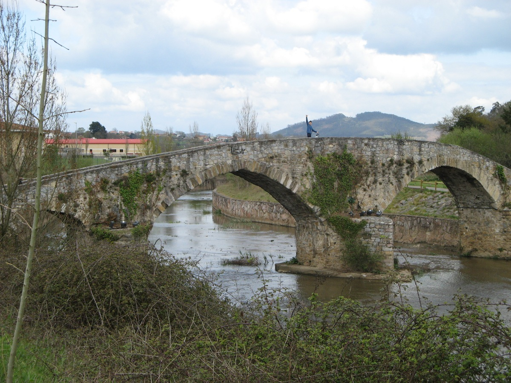
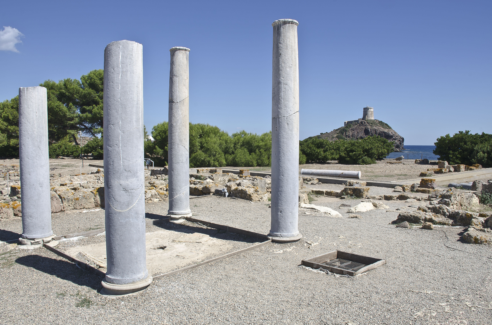
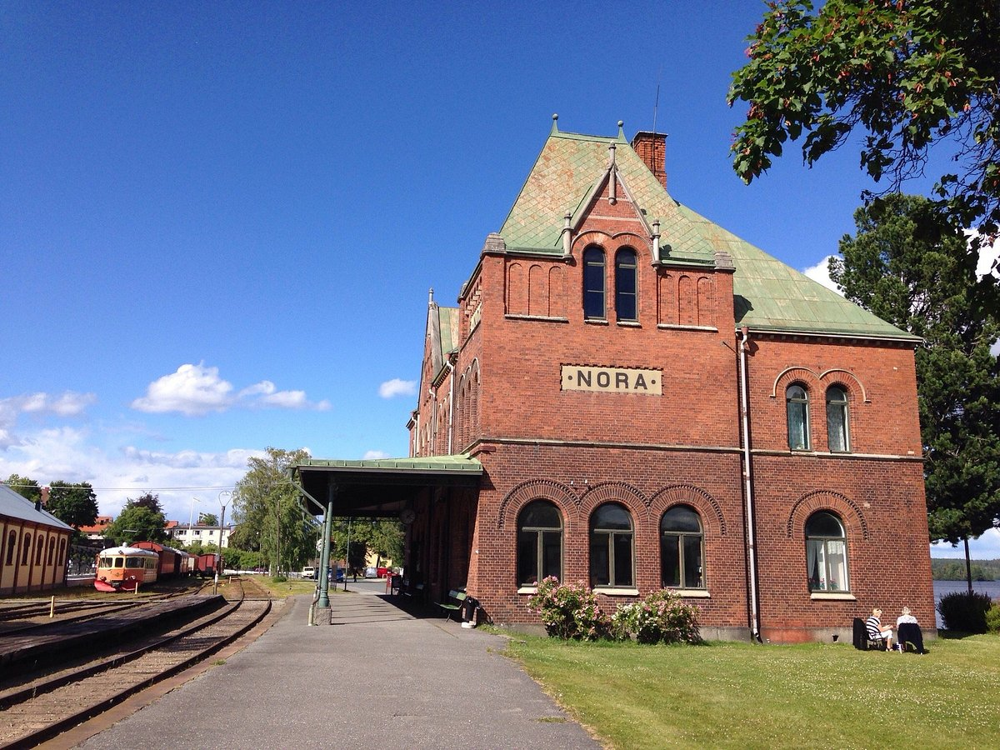
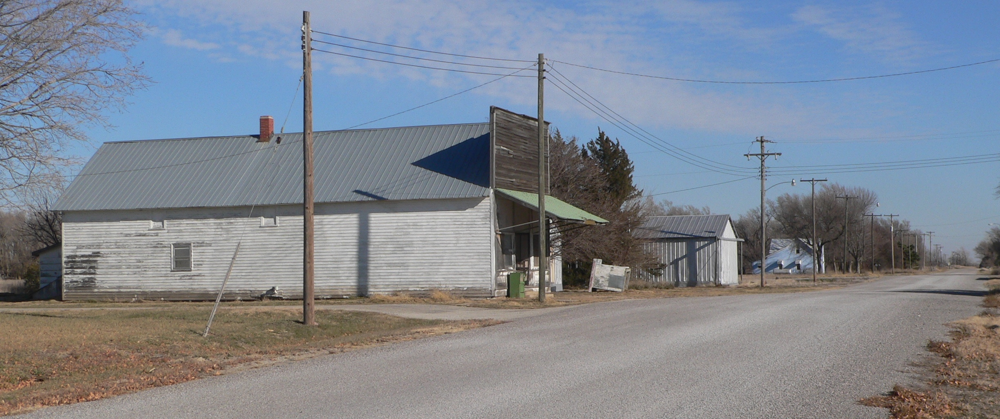

Mount Nora, Canada

Tags: Natural, Mountain
Nora Island, Eritrea

Tags: Natural, Island
Nora Nature Reserve, Russia

Tags: Natural reserve
Nora River, Spain

Tags: Natural, River
Nora Town, Italy

Tags: Ruin
Nora, Sweden

Tags: Town
Nora, Nebraska, USA

Tags: Village